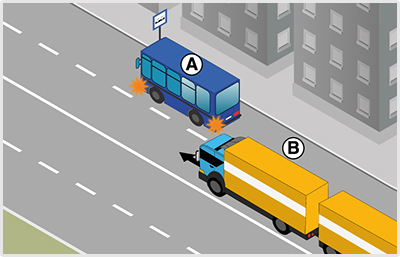
- 287. Ön a ’B’ jelű járműszerelvényt vezeti. Van-e valamilyen kötelezettsége, ha azt látja, hogy a buszmegállóból az ’A’ jelű autóbusz el kíván indulni? #703751
- Nincs, mivel az autóbusz az elindulás után a jobb szélső forgalmi sávba be tud sorolni.
- Igen, lassítással, szükség esetén megállással is lehetővé kell tennie az autóbusz belső sávba történő behajtását.
- Igen, intenzív fékezéssel lehetővé kell tennie az autóbusz sávváltását.
- 288. A ’B’ jelű járműszerelvény vezetője milyen módon köteles lehetővé tenni az ’A’ jelű autóbusz buszmegállóból történő elindulását lakott területen? #703752
- Itt az autóbusz segítség nélkül is be tud kapcsolódni a forgalomba.
- Lassítással, szükség esetén megállással.
- Akár hirtelen fékezéssel is.
- 289. Az ’A’ jelű autóbusz vezetője számíthat-e arra, hogy az érkező ’B’ jelű járműszerelvény vezetője lehetővé teszi a belső sávba történő besorolást? #703753
- Nem.
- Igen.

- 290. Melyik irányban haladhat el az ábrán látható járdasziget mellett, ha az az úttest menetirány szerinti jobb és bal oldalát választja el egymástól? #703800
- Csak jobbról, a ’B’ jelű nyomvonalon.
- Csak balról, az ’A’ jelű nyomvonalon.
- Útiránytól függően akár az ’A’, akár a ’B’ jelű nyomvonalon.
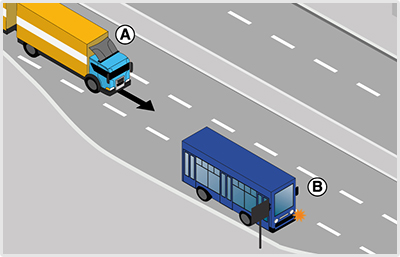
- 291. Ön az ’A’ jelű járműszerelvényt vezeti. Van-e valamilyen kötelezettsége, ha azt látja, hogy a buszmegállóból a ’B’ jelű autóbusz el kíván indulni? #704120
- Igen, lassítással, szükség esetén megállással is lehetővé kell tennie az autóbusz elindulását.
- Nincs, mivel az autóbusz több sávos útra kíván ráhajtani.
- Lassítás nélkül folytathatja útját, mivel az elinduló járművek kötelesek elsőbbséget adni az érkezők számára.
- 292. Az ’A’ jelű járműszerelvény vezetője milyen módon köteles lehetővé tenni a ’B’ jelű autóbusz buszmegállóból történő elindulását? #704121
- Lassítással, szükség esetén megállással.
- Csak lassítással.
- Akár hirtelen fékezéssel is.
- 293. A ’B’ jelű autóbusz vezetője mikor számíthat arra, hogy az érkező ’A’ jelű tehergépkocsiból és pótkocsiból álló járműszerelvény lehetővé teszi az elindulását? #704122
- Ha az elindulási szándékát irányjelzővel jelezte.
- Ha az ajtaját becsukta.
- Amikor beáll a megállóhelyre.
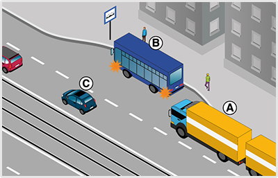
- 294. Ön az ’A’ jelű járműszerelvényt vezeti. Van-e valamilyen kötelezettsége, ha azt látja, hogy a buszmegállóból a ’B’ jelű autóbusz el kíván indulni? #704138
- Igen, lassítással, szükség esetén megállással is lehetővé kell tennie az autóbusz elindulását.
- Nincs, mivel az autóbusz olyan útra kíván ráhajtani, amelyen villamospálya van.
- Lassítás nélkül folytathatja útját, mivel az elinduló járművek kötelesek elsőbbséget adni az érkezők számára.
- 295. Az ’A’ jelű járműszerelvény vezetője milyen módon köteles lehetővé tenni a ’B’ jelű autóbusz buszmegállóból történő elindulását? #704139
- Lassítással, szükség esetén megállással.
- Csak lassítással.
- Akár hirtelen fékezéssel is.
- 296. A ’B’ jelű autóbusz vezetője mikor számíthat arra, hogy az érkező ’A’ jelű gépkocsi lehetővé teszi az elindulását? #704140
- Ha az elindulási szándékát irányjelzővel jelezte.
- Ha az ajtaját becsukta.
- Amikor beáll a megállóhelyre.
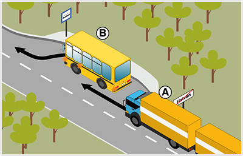
- 297. Ön az ’A’ jelű járműszerelvényt a képen látható helyen vezeti. Van-e valamilyen kötelezettsége, ha azt látja, hogy a buszmegállóból a ’B’ jelű autóbusz el kíván indulni? #704149
- Nincs.
- Igen, lassítással, szükség esetén megállással is lehetővé kell tennie az autóbusz elindulását.
- Igen, intenzív fékezéssel lehetővé kell tennie az autóbusz elindulását.
- 298. Az úttest széléről elinduló jármű vezetője köteles az úttesten haladó... #704346
- járművek és gyalogosok részére elsőbbséget adni.
- járművek és gyalogosok zavarásától tartózkodni.
- 299. Amikor járművével egy várakozóhelyről az úttestre kíván ráhajtani, akkor... #704347
- az úttesten haladó járművek részére köteles elsőbbséget adni.
- az úttesten haladó járművek kötelesek Önnek elsőbbséget adni.
- az úttesten haladó járművektől elvárható az udvariasság.
- 300. Elsőbbsége van-e a zárt pályáról az úttestre ráhajtó villamosnak az úttesten közlekedő járművekkel szemben? #704348
- Igen.
- Nincs elsőbbsége.
- 301. Köteles-e irányjelzéssel jelezni az úttest széléről történő, irányváltoztatással nem járó elindulást? #704349
- Igen, minden esetben.
- Nem
- 302. Hol kell lehetővé tenni az elindulási szándékot jelző, menetrend szerint közlekedő autóbusznak a megállóhelyről való elindulását? #704350
- Csak lakott területen.
- Csak lakott területen kívül.
- Lakott területen és lakott területen kívül egyaránt.
- 303. Válassza ki, hogy az alábbiak közül mely jármű elindulását köteles lakott területen lehetővé tenni? #704351
- A megállóhelyről elinduló iskolabuszét.
- A telephelyről kiinduló figyelmeztető jelzést használó autóét.
- A taximegállóból kiinduló taxiét.
- 304. Lakott területen a megállóhelyről egy gyermekeket szállító autóbusz kíván elindulni. Ha ez hirtelen fékezés nélkül megtehető, köteles-e az elindulását lehetővé tenni? #704352
- Igen.
- Nem, mert ez csak a menetrend szerinti autóbusz esetén kötelező.
- 305. Milyen módon kell lehetővé tenni a lakott területen lévő megállóhelyen tartózkodó, elindulási szándékát jelző autóbusz elindulását? #704353
- Lassítással, szükség esetén megállással
- Kizárólag csak lassítással.
- Minden esetben megállással.
- 306. Milyen módon kell lehetővé tenni az elindulási szándékot jelző, menetrend szerint közlekedő autóbusznak a lakott területen lévő megállóhelyről való elindulását? #704354
- Lassítással, szükség esetén megállással.
- Sebességcsökkentés nélkül.
- Akár hirtelen fékezéssel is.
- 307. Egyéb jelzés hiányában mekkora sebességgel szabad közlekedni a 3500 kg megengedett legnagyobb össztömeget meg nem haladó gépkocsival lakott területen kívül (ide nem értve az autópályát és az autóutat)? #704359
- Legfeljebb 90 km/h sebességgel.
- Legfeljebb 100 km/h sebességgel.
- Legfeljebb 70 km/h sebességgel.
- 308. Egyéb jelzés hiányában mekkora sebességgel szabad közlekedni a 3500 kg megengedett legnagyobb össztömeget meg nem haladó gépkocsival lakott területen? #704360
- Legfeljebb 50 km/h sebességgel.
- Legfeljebb 40 km/h sebességgel.
- Legfeljebb 60 km/h sebességgel.
- 309. Egyéb jelzés hiányában mekkora sebességgel szabad közlekedni pótkocsit vontató személygépkocsival lakott területen kívüli főútvonalon? #704361
- Legfeljebb 70 km/h sebességgel.
- Legfeljebb 90 km/h sebességgel.
- 310. Egyéb jelzés hiányában mekkora sebességgel szabad közlekedni segédmotoros kerékpárral lakott területen kívül? #704362
- Legfeljebb 40 km/h sebességgel.
- Legfeljebb 50 km/h sebességgel.
- Legfeljebb 60 km/h sebességgel.
- 311. Egyéb jelzés hiányában mekkora sebességgel szabad közlekedni segédmotoros kerékpárral lakott területen? #704363
- Legfeljebb 40 km/h sebességgel.
- Legfeljebb 50 km/h sebességgel.
- Legfeljebb 30 km/h sebességgel.
- 312. Egyéb jelzés hiányában mekkora sebességgel szabad közlekedni mezőgazdasági vontatóval? #704364
- Legfeljebb 40 km/h sebességgel.
- Legfeljebb 50 km/h sebességgel.
- Legfeljebb 30 km/h sebességgel.
- 313. Egyéb jelzés hiányában mekkora sebességgel szabad közlekedni lassú járműből és pótkocsiból álló járműszerelvénnyel? #704365
- Legfeljebb 25 km/h sebességgel.
- Legfeljebb 20 km/h sebességgel.
- Legfeljebb 30 km/h sebességgel.
- 314. Legfeljebb milyen távolságban szabad követni járművel egy másik járművet? #704369
- Olyan távolságban, hogy az elöl haladó jármű mögött hirtelen fékezése esetén is meg lehessen állni.
- Mindig 10 méternél nem kisebb távolságra.
- Olyan távolságban, hogy a tompított fényszórónk ne vakítsa el az elöl haladó jármű vezetőjét.
- 315. Milyen távolságban szabad követni járművel egy kerékpárost? #704370
- Olyan távolságban, hogy a kerékpáros mögött, annak hirtelen fékezése esetén is meg lehessen állni.
- Tetszőleges távolságra lehet követni, erre nincs előírás.
- Olyan távolságban, hogy egy előzést végző jármű még beférjen járművünk és a kerékpáros közé.
- 316. Egyéb jelzés hiányában milyen távolságban szabad követni egy 8 méter hosszúságú járműszerelvénnyel egy személygépkocsit lakott területen kívül egy forgalmi sávos úton? #704372
- Olyan távolságban, hogy a két jármű közé legalább egy - előzést végrehajtó - személygépkocsi még biztonságban besorolhasson.
- Olyan távolságban, hogy a két jármű közé legalább egy - előzést végrehajtó - tehergépkocsi még biztonságban besorolhasson.
- Olyan távolságban, hogy az elöl haladó jármű mögött hirtelen fékezése esetén is meg lehessen állni.
- 317. Fékezhet-e hirtelen, ha egy figyelmetlen gyalogos váratlanul az Ön által vezetett jármű elé az úttestre lép? #704373
- Igen, ha ezt a személy- vagy vagyonbiztonság megóvása szükségessé teszi.
- Csak akkor, ha az Ön mögött haladó megfelelő követési távolságot tart.
- Nem, mert hirtelen fékezni sosem szabad.
- 318. Köteles-e elsőbbséget adni egyenrangú útkereszteződésben a jobbról érkező villamos részére? #704374
- Igen.
- Nem, csak a balról érkező villamos részére kell elsőbbséget adni.
- 319. Köteles-e elsőbbséget adni egyenrangú útkereszteződésben egy jobbról érkező kerékpáros részére? #704375
- Igen.
- Nem, csak gépjárművek részére kell elsőbbséget adni.
- 320. Köteles-e elsőbbséget adni egyenrangú útkereszteződésben a balról érkező trolibusz részére? #704376
- Nem.
- Igen.
- 321. Köteles-e elsőbbséget adni egyenrangú útkereszteződésben a balról érkező figyelmeztető jelzést használó gépjármű részére. #704377
- Nem.
- Igen.
- 322. Köteles-e elsőbbséget adni egy földútról érkező megkülönböztető jelzéseit együttesen használó gépjármű részére? #704378
- Igen.
- Nem.
- 323. Alkalmazni kell-e a jobbratartás szabályait körforgalmú úton történő közlekedés során? #715001
- Igen.
- Nem.
- 324. Köteles-e eleget tenni jobbratartási kötelezettségének, ha járművével egyirányú forgalmú úton közlekedik? #715004
- Igen.
- Nem.
- 325. Az úttest szélén lassító sáv található. Köteles-e járművével a jobbratartás értelmében itt közlekedni? #715007
- Nem.
- Igen, ha a jármű vezetője túl lassan halad.
- Igen, minden esetben.
- 326. Egyéb jelzés hiányában mekkora sebességgel szabad közlekedni pótkocsit vontató személygépkocsival autóúton? #715074
- Legfeljebb 70 km/h sebességgel.
- Legfeljebb 90 km/h sebességgel.
- Legfeljebb 80 km/h sebességgel.
- 327. Egyéb jelzés hiányában mekkora sebességgel szabad közlekedni lakókocsit vontató személygépkocsival autópályán? #715075
- Legfeljebb 80 km/h sebességgel.
- Legfeljebb 110 km/h sebességgel.
- Legfeljebb 130 km/h sebességgel.
- 328. Egyéb jelzés hiányában mekkora sebességgel szabad közlekedni elromlott járművet vontató gépjárművel lakott területen kívüli főútvonalon? #715077
- Legfeljebb 40 km/h sebességgel.
- Legfeljebb 70 km/h sebességgel.
- Legfeljebb 90 km/h sebességgel.

- 329. Lakott területen ezt a közúti jelzőtáblát látja. Mekkora sebességgel szabad közlekedni a 3500 kg megengedett legnagyobb össztömeget meghaladó gépkocsival? #715078
- Legfeljebb 50 km/h sebességgel.
- Legfeljebb 70 km/h sebességgel.
- 330. A körforgalomban egy olyan villamospályát keresztez, amelyen egy villamos hajt be a körforgalomba. Mikor jár el szabályosan? #715083
- Ha elsőbbséget ad a körforgalmat keresztező villamos részére.
- Ha elhalad a villamos előtt, mivel a körforgalomba behajtó villamos köteles elsőbbséget adni.
- Ha a kölcsönös udvariasság alapján megegyeznek az áthaladási sorrendben.
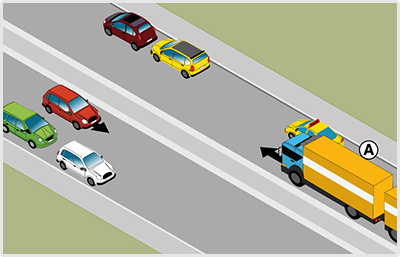
- 331. Köteles az ’A’ jelű gépkocsi a képen látható helyen az úttest jobb szélére húzódni? #721538
- Nem.
- Igen.
- 332. Milyen irányú a forgalom olyan úton, amelyen három, egymástól elkülönített úttest van? #721546
- A középső úttesten kétirányú, a szélső úttesteken egyirányú forgalom van.
- Mindegyik úttesten egyirányú forgalom van.
- A középső úttesten egyirányú, a szélső úttesteken kétirányú forgalom van.
- 333. Ön tehergépkocsijával olyan útesten közlekedik, amely mellett kerékpársávot alakítottak ki. Az alábbiak közül mire kell ügyelnie? #721548
- Hogy a jármű rakománya ne nyúljon a kerékpársáv fölé.
- Hogy a kerékpársávtól legalább két méterre haladjon.
- Hogy a kerékpársáv közelében ne használjon hangjelzést.
- 334. Köteles-e lassú járművével szorosan az úttest jobb szélén közlekedni? #721550
- Igen, ha az út- és forgalmi viszonyok ezt lehetővé teszik.
- Nem.
- Csak akkor, ha 20 km/h sebességnél lassabban halad.
- 335. Mit jelent a jobbratartási kötelezettség? #721552
- Lehetőség szerint az úttest jobb szélén kell közlekedni.
- Lehetőség szerint az úttest jobb oldalán bárhol lehet közlekedni.
- Lehetőség szerint a járdaszigettől 30 cm-re kell közlekedni.
- 336. Ön lassú járművet vezet 10 km/h sebességgel. Ha az úttest mellett lassító sáv van, köteles-e itt közlekedni, ha egyébként egyenesen kíván továbbhaladni? #721554
- Nem.
- Igen.
- 337. Melyi irányból szabad elhaladni az úttesten levő járdasziget mellett, ha az nem az úttest menetirány szerinti jobb és bal oldalát választja el egymástól és a járdaszigeten nem helyezték el a kikerülési irány jelzőtáblát sem? #721555
- Útiránytól függően jobbról és balról is.
- A jobbratartás miatt kizárólag csak jobbról.
- Minden esetben csak balról.
- 338. Egyéb jelzés hiányában milyen távolságban szabad követni egy 7500 kg megengedett legnagyobb össztömegű tehergépkocsival egy másik tehergépkocsit lakott területen kívüli, párhuzamos közlekedésre alkalmatlan úton? #721594
- Olyan távolságban, hogy a két jármű közé legalább egy - előzést végrehajtó - személygépkocsi még biztonságban besorolhasson.
- Olyan távolságban, hogy a két jármű közé legalább egy - előzést végrehajtó - tehergépkocsi még biztonságban besorolhasson.
- Olyan távolságban, hogy az elöl haladó jármű mögött hirtelen fékezése esetén is meg lehessen állni.
- 339. Egyéb jelzés hiányában milyen távolságban szabad követni egy 7500 kg megengedett legnagyobb össztömegű tehergépkocsival egy másik tehergépkocsit autópályán? #721595
- Olyan távolságban, hogy az elöl haladó jármű mögött hirtelen fékezése esetén is meg lehessen állni.
- Olyan távolságban, hogy a két jármű közé legalább egy - előzést végrehajtó - személygépkocsi még biztonságban besorolhasson.
- Olyan távolságban, hogy a két jármű közé legalább egy - előzést végrehajtó - tehergépkocsi még biztonságban besorolhasson.
- 340. Egyéb jelzés hiányában mekkora sebességgel szabad közlekedni a 3500 kg megengedett legnagyobb össztömeget meghaladó gépkocsival lakott területen kívül (ide nem értve az autópályát és az autóutat)? #721850
- Legfeljebb 70 km/h sebességgel.
- Legfeljebb 80 km/h sebességgel.
- Legfeljebb 90 km/h sebességgel.
- 341. Egyéb jelzés hiányában mekkora sebességgel szabad közlekedni a 3500 kg megengedett legnagyobb össztömeget meghaladó gépkocsival autóúton? #721851
- Legfeljebb 70 km/h sebességgel.
- Legfeljebb 80 km/h sebességgel.
- Legfeljebb 90 km/h sebességgel.
- 342. Egyéb jelzés hiányában mekkora sebességgel szabad közlekedni a 3500 kg megengedett legnagyobb össztömeget meghaladó gépkocsival autópályán? #721853
- Legfeljebb 80 km/h sebességgel.
- Legfeljebb 90 km/h sebességgel.
- Legfeljebb 110 km/h sebességgel.

- 343. Ön a kormánykerékkel jelzett járművet vezetve köteles-e lehetővé tenni az ’A’ jelű autóbusz buszmegállóból történő elindulását lakott területen? #722167
- Nem.
- Igen, lassítással, szükség esetén megállással.
- Igen, akár hirtelen fékezéssel is.
- 344. Ön a kormánykerékkel jelzett járművet vezeti. Az ’A’ jelű autóbusz vezetője számíthat-e arra, hogy Ön lehetővé teszi a belső sávba történő besorolást? #722168
- Nem.
- Igen.
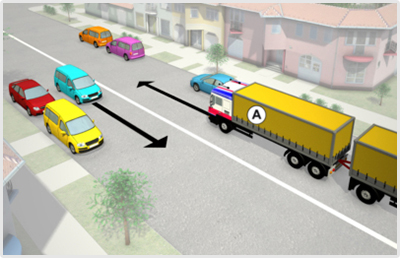
- 345. A képen látható járművek az úttest jobb szélén 15-20 méter távolságra várakoznak egymástól. Az ’A’ jelű járműszerelvény szabályosan közlekedik, ha haladása közben nem húzódik le közéjük? #722228
- Igen.
- Nem, mert a jobbra tartásnak megfelelően mindig köteles az úttest jobb széléhez húzódva közlekedni.
- 346. Köteles az ’A’ jelű gépkocsi a képen látható helyen az úttest jobb szélére húzódni? #722229
- Nem.
- Igen.
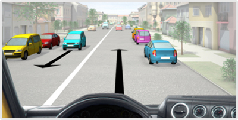
- 347. Ön a kormánykerékkel jelzett járművet vezetve köteles a képen látható helyen az úttest jobb szélén várakozó járművek közé húzódni? #722238
- Nem.
- Igen.
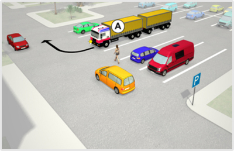
- 348. Az ’A’ jelű járműszerelvény a parkolóhelyről kíván elindulni. Mikor kell az irányjelzőt használnia? #723503
- Az elindulás megkezdése előtt, amit az úttestre kikanyarodásig működtetnie kell.
- Csak az elindulás után, mielőtt elkanyarodik a választott irányba.
- Itt csak akkor kell irányjelzést adnia, ha az úttesten másik jármű érkezik.
- 349. Az ’A’ jelű járműszerelvény a parkolóhelyről kíván elindulni. A tervezett manőver kapcsán van-e elsőbbségadási kötelezettsége? #723504
- Igen, van.
- Nincs.
- 350. Az ’A’ jelű járműszerelvény a parkolóhelyről kíván elindulni. Eközben... #723505
- köteles a gyalogos részére elsőbbséget adni.
- a gyalogost feltarthatja.
- a gyalogostól elsőbbséget fog kapni.

- 351. Ön a kormánykerékkel jelzett járművet vezeti lakott területen. Van-e valamilyen kötelezettsége, ha azt látja, hogy a buszmegállóból a ’B’ jelű autóbusz el kíván indulni? #723643
- Igen, lassítással, szükség esetén megállással is lehetővé kell tennie az autóbusz elindulását.
- Nincs, mivel az autóbusz több sávos útra kíván ráhajtani.
- Lassítás nélkül folytathatja útját, mivel az elinduló járművek kötelesek elsőbbséget adni az érkezők számára.
- 352. Ön a kormánykerékkel jelzett járművet vezetve milyen módon köteles lehetővé tenni lakott területen a ’B’ jelű autóbusz buszmegállóból történő elindulását? #723644
- Lassítással, szükség esetén megállással.
- Megállás nélkül, csak lassítással.
- Akár hirtelen fékezéssel is.
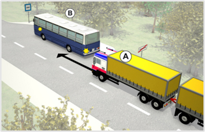
- 353. Az ’A’ jelű járműszerelvény vezetője köteles-e lehetővé tenni a ’B’ jelű autóbusz buszmegállóból történő elindulását? #723648
- Nem.
- Igen.
- Igen, de csak akkor, ha ez hirtelen fékezés nélkül megtehető.

- 354. Ön a kormánykerékkel jelzett járművet vezeti. Köteles-e lehetővé tenni a ’B’ jelű autóbusz buszmegállóból történő elindulását? #723654
- Nem.
- Igen.
- Igen, de csak akkor, ha ez hirtelen fékezés nélkül megtehető.
- 355. Az ’A’ jelű járműszerelvény vezetője milyen módon köteles lehetővé tenni a ’B’ jelű autóbusz buszmegállóból történő elindulását lakott területen kívül? #723763
- Itt nem köteles az autóbusz elindulását lehetővé tenni.
- Lassítással, szükség esetén megállással.
- Akár hirtelen fékezéssel is.
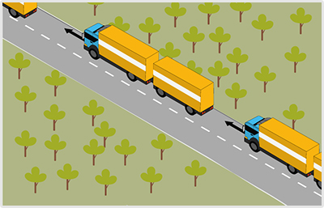
- 356. A képen látható 7 méternél hosszabb járműszerelvények lakott területen kívül milyen követési távolságot kötelesek tartani? #723917
- Olyan követési távolságot, hogy a két jármű közé legalább egy - előzést végrehajtó - személygépkocsi biztonságosan besorolhasson.
- Olyan távolságot, amely elegendő ahhoz, hogy az elöl haladó jármű mögött - ennek hirtelen fékezése esetében is - meg lehessen állni.
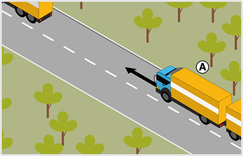
- 357. Ön a ’B’ jelű 12 méter hosszú járműszerelvényt vezeti. Mekkora követési távolságot kell tartania az elöl haladó tehergépkocsi mögött lakott területen kívül? #723923
- Olyan követési távolságot, hogy a két jármű közé legalább egy - előzést végrehajtó - személygépkocsi biztonságosan besorolhasson.
- Olyan követési távolságot, amely elegendő ahhoz, hogy az elöl haladó jármű mögött - annak hirtelen fékezése esetén is - meg lehessen állni.
- A féktávolságnak megfelelő követési távolságot.